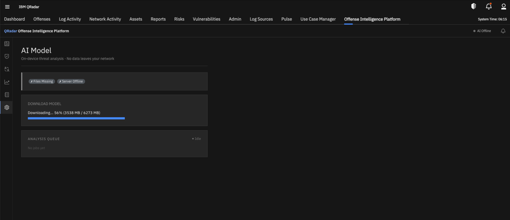
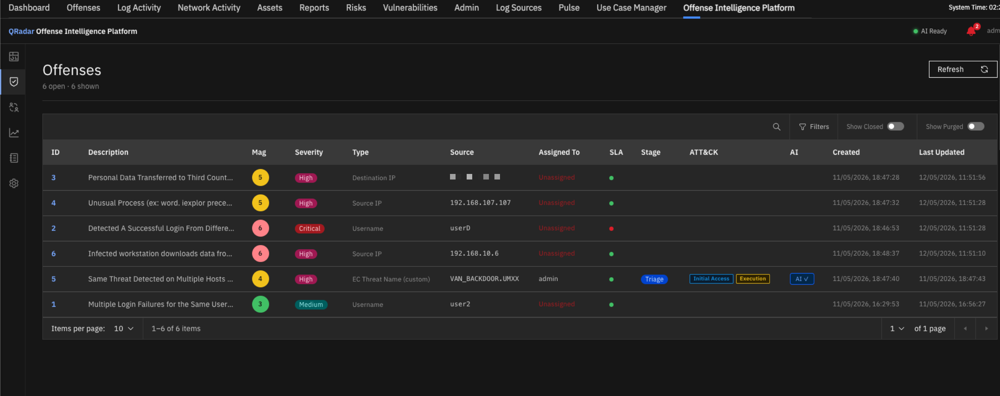
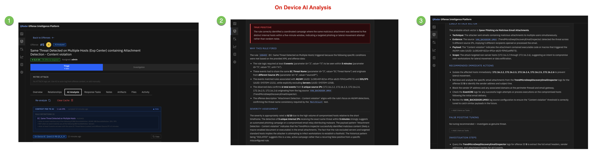
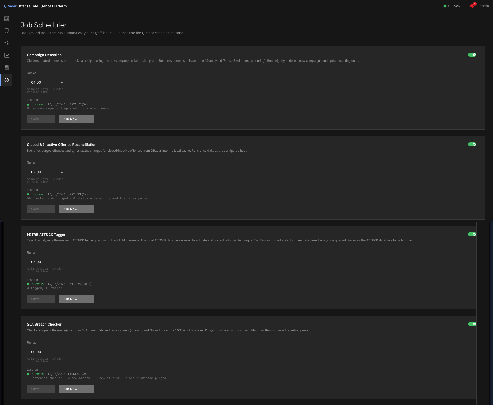

Getting Started¶
Requirements¶
| Requirement | Detail |
|---|---|
| IBM QRadar | 7.5.0 UP12 and later |
| App container memory | 8 GB minimum |
| Network | Outbound internet not required after installation but it needs internet during initial setup |
| QRadar user role | ADMIN capability required |
Memory Requirement
The app requires 8 GB of memory allocated to the QRadar app container. This is set in manifest.json and enforced by the QRadar app framework.
Installation¶
Step 1 — Obtain the package¶
Download the latest .zip package from the IBM Application Exchange page.
Step 2 — Install via Extensions Management¶
- Log in to QRadar as an admin
- Navigate to Admin → Extensions Management
- Click Add and upload the
.zipfile - Click Install and confirm
QRadar will deploy the app container. This may take 2–5 minutes on first install as the container image is extracted.
Step 3 — Open the app¶
Once installed, the app appears in the QRadar navigation as Offense Intelligence Platform.
First-Time Setup¶
1. Configure the QRadar connection¶
On first launch, you will be redirected to Settings → QRadar Connection.
Enter your QRadar API service token. This token is used to fetch offenses, events, rules, and user lists from QRadar.
Creating a service token
In QRadar: Admin → Authorized Services → Add Authorized Service. Assign the ADMIN role and copy the token.
Click Save, then Test Connection to verify.
2. Download the AI model¶
Navigate to Model Management (accessible from the top navigation bar).
Click Download Model. The app will download the Qwen3.5-9B Q5 model (~6.1 GB) from Hugging Face directly to the QRadar appliance.
Air-gapped environments
If your QRadar appliance has no outbound internet access, transfer the model file manually to /opt/app-root/store/models/ inside the app container, then click Refresh on the Model Management page.
Once the status shows AI Ready (green dot in the top bar), the platform is fully operational.

Model Management — download progress and AI Ready status indicator.3. Open the Dashboard¶
Navigate to Dashboard. The app automatically syncs open offenses from QRadar on the first page load and continues polling in the background every 5 minutes (configurable under Settings → System Settings → Poll Interval).
No manual sync step is required — offenses will appear within seconds of the first load.
Manual refresh
If you want to force an immediate sync at any time, click Sync Now on the Offenses page. This bypasses the poll interval and fetches the latest offenses from QRadar immediately.

Offense list — automatically populated from QRadar on first load.4. Build the MITRE ATT&CK database¶
Navigate to Settings → MITRE ATT&CK and click Build Database. This downloads the current ATT&CK framework from MITRE and builds the local knowledge base used for technique validation.
Air-gapped environments
Download the STIX 2.1 bundle from MITRE ATT&CK on a connected machine, then upload it via the Upload Bundle option.
Running Your First AI Analysis¶
- Navigate to Offenses and open any offense
- Click the AI Analysis tab
- Click Analyze — the offense is queued for analysis
- Watch the Analysis Queue panel (top right of the AI tab) — the job will show as running
- Analysis typically completes in 2–10 minutes depending on the appliance hardware and the number of events in the offense. The model runs entirely on the appliance CPU — no GPU or external service is required.
The result includes: verdict, attack narrative, MITRE technique mapping, affected assets, recommended immediate actions, false positive assessment, and investigation steps.

AI analysis result — structured 7-section output with verdict, attack narrative, and recommended actions.Scheduler Jobs¶
The platform includes a built-in job scheduler that runs nightly tasks automatically. After initial setup, navigate to Settings → Job Scheduler and review the default job schedule:
| Job | Default time | Purpose |
|---|---|---|
| SLA Breach Checker | 00:00 | Raises SLA breach and at-risk notifications |
| MITRE ATT&CK Tagger | 03:00 | Tags AI-analyzed offenses with ATT&CK techniques |
| Campaign Detection | 04:00 | Clusters related offenses into attack campaigns |
| Closed Offense Reconciliation | 02:00 | Syncs closed/inactive offenses from QRadar |
Enable the jobs you want and adjust the run times to suit your maintenance window.

Job Scheduler — configure run times and monitor last run status for each job.